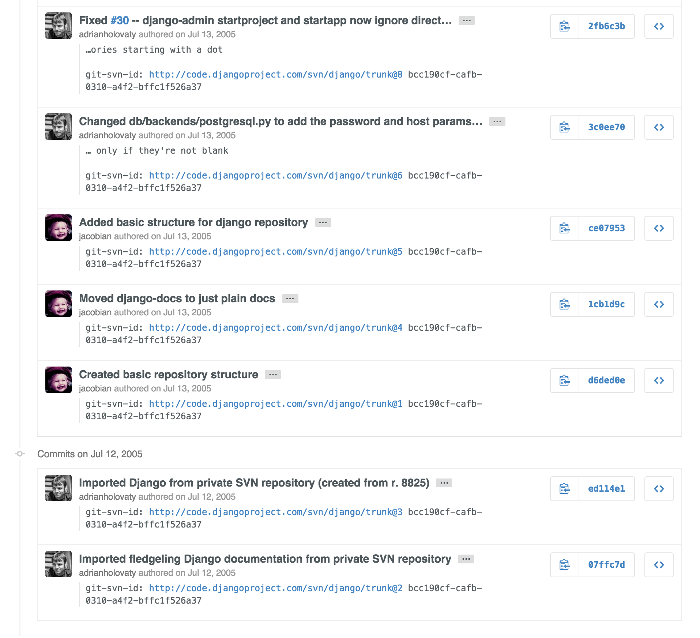
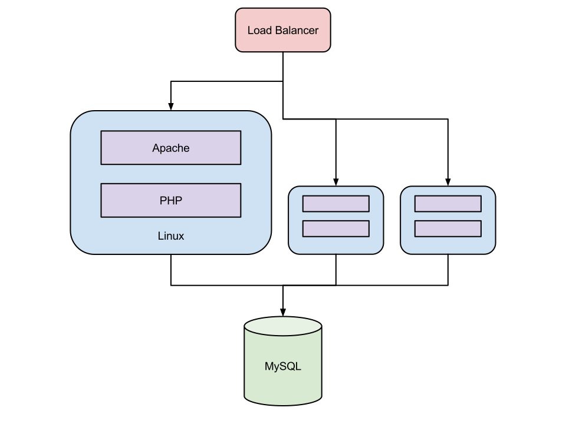
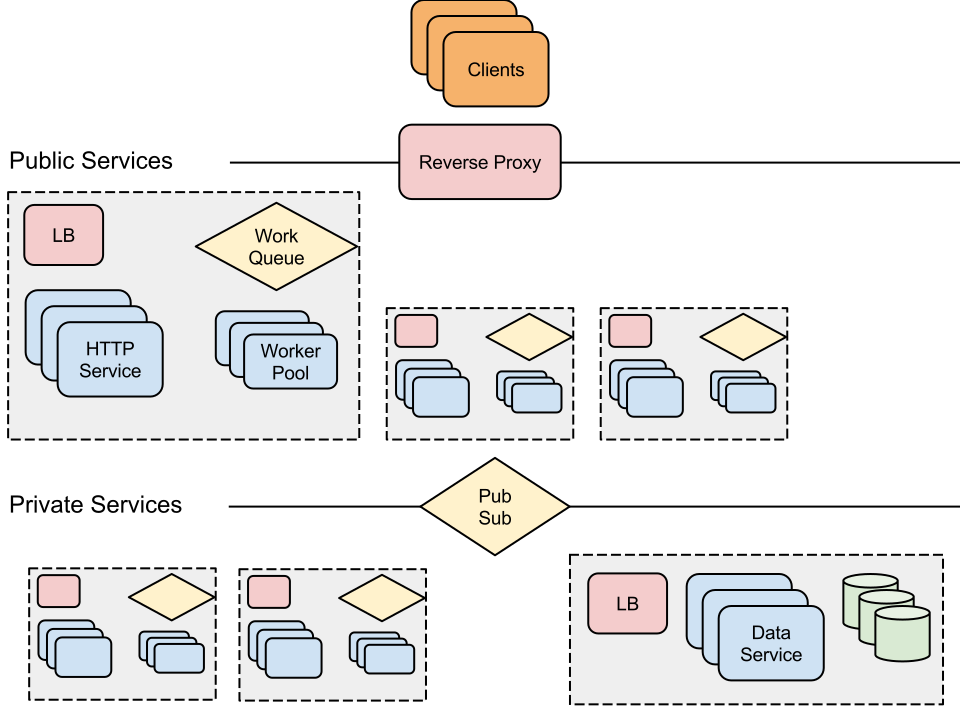
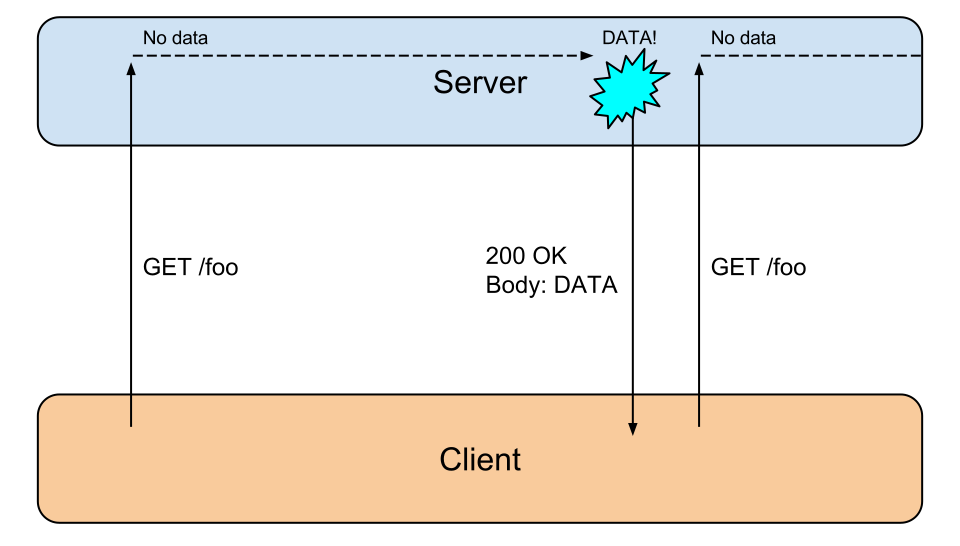
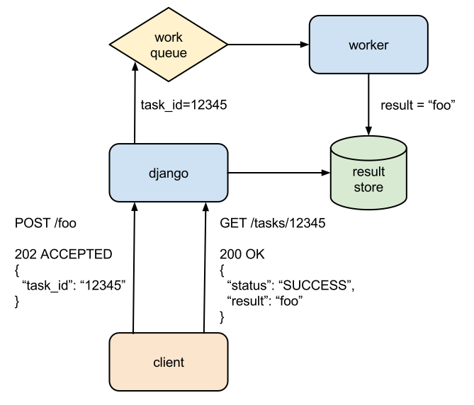
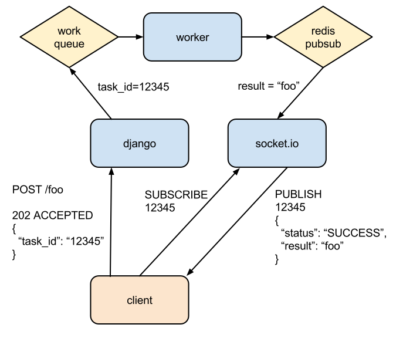
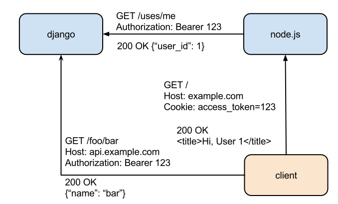

a brief history

(but it was built for one)
"perfectionists with deadlines"


expectations
web "site" 🆚 "app"
python
"perfectionists with deadlines"
c10k
js client integration
example problems
push to web clients



async task results


server side js rendering
¯\_(ツ)_/¯
subprocess.call(['node', 'render.js'])
React.renderToString(BaseElement)
shared authentication

say no to full stack python
(when it's not, pubsub is)
web browsers are service consumers